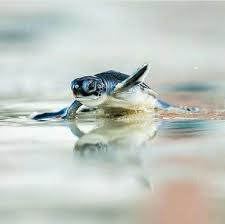
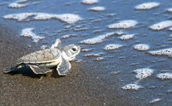
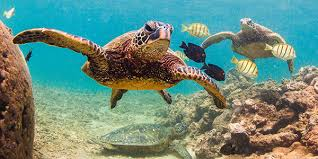
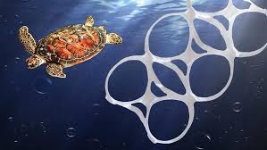
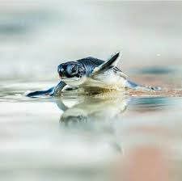
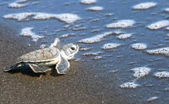
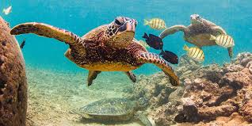
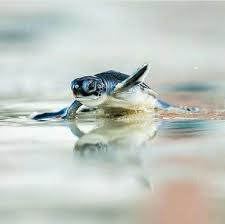
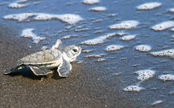
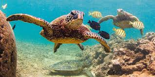

Sea turtles are a "keystone species", which means they are an important part of their environment and influence other species around them. If a keystone species is removed from a habitat, the natural order can be disrupted, which impacts other wildlife and animals in different ways. Nesting sea turtles help beaches by depositing their eggs in the sand. Eggshells and unhatched eggs left behind provide important nutrients that nourish dune vegetation such as beach grasses, which stabilize dunes and help to prevent coastal erosion.Sea turtles play an important cultural role for many coastal communities around the world. Many indigenous cultures revere them or consider them ancestors. They are also an important source of income for coastal residents through turtle-watching ecotourism. Aside from their important ecological role, sea turtles are some of the most charismatic animals on the planet! It seems that everyone loves sea turtles. I love turtles.They are amazing animas and so cute and adorable. I am always boating and I love the water and any sea animal in it, but the way that people are polluting the water and killing turtles is not okay. Save the Turtles!



Many Causes of Sea Turtles' Death
Carry reusable water bottles and shopping bags. Refrain from releasing balloons, they'll likely end up in the ocean where sea turtles can mistake them for prey and consume them.

Reduce marine debris that may entangle or be accidentally eaten by sea turtles.
Participate in coastal clean-ups and reduce plastic use to keep our beaches and ocean clean. Trash in the ocean can harm sea turtles and other creatures that live there.
Boat strikes are a serious threat to sea turtles, so slow down and steer around them.
Never abandon fishing gear. Hooks, lines, or nets left in the water can entangle and kill sea turtles.
Recycle fishing line and discard your trash on shore in trash receptacles.
 




